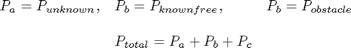

threeDMedianFilt
Description: Filters the unknown points which are in level 1 where there is an unknown point completely surrounded by known points which are not obstacles
Contents
- Function Call
- Variables
- Calculate set of points (P) in level 1 for 3 different possibilities
- If there are any points
- Go through each point & check if there are NO surrounding unknown pnts
- Add filtered out unknown points to either obstacles or known free
- Additional Future work to remove unknown points in ellipses on a path
Function Call
Inputs: NULL
Returns: NULL
function threeDMedianFilt()
keyboard
Variables
global workspace
OBtofilterout=[];
KNtofilterout=[];
Calculate set of points (P) in level 1 for 3 different possibilities

a=round(workspace.unknowncoords(workspace.lev1unknown,:)/workspace.inc_size);
b=round(workspace.knowncoords(GetImpLevInfo(workspace.knowncoords),:)/workspace.inc_size);
c=round(workspace.indexedobsticles(GetImpLevInfo(workspace.indexedobsticles),:)/workspace.inc_size);
[nothing,index]=setdiff(a,[b;c],'rows');
If there are any points
if ~isempty(index) %unknown point which need to be median filtered P2chk=workspace.unknowncoords(workspace.lev1unknown(index),:); P2chkIndx=round(P2chk/workspace.inc_size); display(strcat('Initial num of unnknown points in level 1:',num2str(size(P2chkIndx,1))));
Go through each point & check if there are NO surrounding unknown pnts
for i=1:size(P2chkIndx,1) %currently all point around must not be unknown (if you change this %to allow some points to be unknown it will potentially start a %chain reaction which will eventually turn all points into known if length(find((P2chkIndx(i,1)-1==P2chkIndx(:,1) | P2chkIndx(i,1)==P2chkIndx(:,1) | P2chkIndx(i,1)+1==P2chkIndx(:,1)) &... (P2chkIndx(i,2)-1==P2chkIndx(:,2) | P2chkIndx(i,2)==P2chkIndx(:,2) | P2chkIndx(i,2)+1==P2chkIndx(:,2)) &... (P2chkIndx(i,3)-1==P2chkIndx(:,3) | P2chkIndx(i,3)==P2chkIndx(:,3) | P2chkIndx(i,3)+1==P2chkIndx(:,3))))==1 %if any surrounding are obstacles, assume its an obsacle otherise assume its free if ~isempty(find((P2chkIndx(i,1)-1==c(:,1) | P2chkIndx(i,1)==c(:,1) | P2chkIndx(i,1)+1==c(:,1)) &... (P2chkIndx(i,2)-1==c(:,2) | P2chkIndx(i,2)==c(:,2) | P2chkIndx(i,2)+1==c(:,2)) &... (P2chkIndx(i,3)-1==c(:,3) | P2chkIndx(i,3)==c(:,3) | P2chkIndx(i,3)+1==c(:,3)), 1)) OBtofilterout=[OBtofilterout;i]; else KNtofilterout=[KNtofilterout;i]; end end end display(strcat('Num Points to be added to KNOWN list after median filtering:',num2str(size(KNtofilterout,1)))); display(strcat('Num Points to be added to OBSTACLE list after median filtering:',num2str(size(OBtofilterout,1)))); end
Add filtered out unknown points to either obstacles or known free
workspace.knowncoords=[workspace.knowncoords;workspace.unknowncoords(workspace.lev1unknown(index(KNtofilterout)),:)]; workspace.obsticlepoints=[workspace.obsticlepoints;workspace.unknowncoords(workspace.lev1unknown(index(OBtofilterout)),:)];
Additional Future work to remove unknown points in ellipses on a path
% %robot parameters % n = r.n; % L = r.link; % t = r.base; % % %% check each step for unknown points % % for i=1:size(all_steps,1) % t = r.base; % for piece=1:n % t = t * L{piece}(all_steps(i,piece)); % translated_points=[P2chk(:,1)-t(1,4) P2chk(:,2)-t(2,4) P2chk(:,3)-t(3,4)]; % translated_points=translated_points*t(1:3,1:3); % % KNtofilterout=[KNtofilterout;... % find(((translated_points(:,1)-densoobj(piece+1).ellipse.center(1)).^2)/densoobj(piece+1).ellipse.params(1)^2+... % ((translated_points(:,2)-densoobj(piece+1).ellipse.center(2)).^2)/densoobj(piece+1).ellipse.params(2)^2+... % ((translated_points(:,3)-densoobj(piece+1).ellipse.center(3)).^2)/densoobj(piece+1).ellipse.params(3)^2<=1)]; % find(((translated_points(:,1)-densoobj(piece+1).ellipse.center(1)).^2)/densoobj(piece+1).ellipse.params(1)^2+... % ((translated_points(:,2)-densoobj(piece+1).ellipse.center(2)).^2)/densoobj(piece+1).ellipse.params(2)^2+... % ((translated_points(:,3)-densoobj(piece+1).ellipse.center(3)).^2)/densoobj(piece+1).ellipse.params(3)^2<=1) % end % end % % size(KNtofilterout,1)